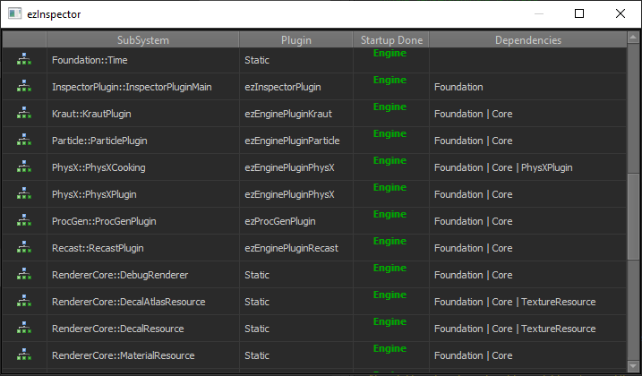

Startup System
Initializing an engine and shutting it properly down again, is a surprisingly difficult task. There are many steps involved, some of which have hard requirements on their ordering. Also, some functionality can only be initialized when at least a window, and potentially even a graphics API is available, which is not the case for command line tools. Once plugins are added to the mix, which can be loaded and unloaded at any time, it becomes impossible to manually set up this process.
Therefore, EZ uses a dedicated startup system, to handle this complexity automatically for you.
Startup System Concept
The concept of the startup system is simple. For every 'thing' in the engine you write code how to initialize it and shut it down again. 'Things' in the startup system are referred to as subsystems. You then define what other subsystems you depend on, so that your startup code should run after your dependencies, and your shutdown code should run before your dependencies.
All of this is then (automatically) given to the startup system, and when it comes time to fully boot up the engine, that system sorts all subsystems by their dependencies and executes them in the right order. Conversely, it executes all shutdown code in the reverse order.
Two Phase Startup
A lot of code can be initialized easily in all applications. However, some code strictly requires a window or graphics API to work with and could never be initialized successfully in a command line application.
Therefore, the startup system splits the engine initialization into two phases: core systems startup (phase 1) and high level systems startup (phase 2). For command line applications, we would only ever run phase 1. In a proper game, we would first run phase 1, then create our window and rendering API and finally run phase 2. This way, when we don't need things like a renderer or the input system, we simply exclude all high level systems from being initialized.
Dependencies
Some subsystems depend on other subsystems to be initialized. Therefore the startup system requires you to provide a name for every subsystem and also a group. The name can be arbitrary but has to be unique. The group name obviously does not need to be unique, as multiple subsystems can be part of the same group.
When you declare a dependency on another subsystem, you can then either specify it by its direct name, or you can also just declare a dependency on an entire group. The latter is very common, as it is often easier, and you rarely have very strict dependencies on a single subsystem.
Startup System Usage
In practice, to use the startup system, you need to add a block of code to some cpp file. You can copy this code from Foundation/Configuration/Startup.h and then just fill out the parts that you require. An example is given in the Sample Game Plugin:
// clang-format off
EZ_BEGIN_SUBSYSTEM_DECLARATION(SampleGamePluginStartupGroup, SampleGamePluginMainStartup)
// list all the subsystems that we want to be initialized first
BEGIN_SUBSYSTEM_DEPENDENCIES
"Foundation", // all subsystems from the 'Foundation' group (this is redundant, because `Core` already depends on `Foundation`)
"Core" // and all subsystems from the 'Core' group
END_SUBSYSTEM_DEPENDENCIES
ON_CORESYSTEMS_STARTUP
{
// allocate an implementation of PrintInterface
s_PrintInterface = EZ_DEFAULT_NEW(PrintImplementation);
s_PrintInterface->OnCoreSystemsStartup();
s_PrintInterface->Print("Called ON_CORESYSTEMS_STARTUP");
}
ON_CORESYSTEMS_SHUTDOWN
{
s_PrintInterface->Print("Called ON_CORESYSTEMS_SHUTDOWN");
// clean up the s_PrintInterface, otherwise we would get asserts about memory leaks at shutdown
s_PrintInterface.Clear();
}
ON_HIGHLEVELSYSTEMS_STARTUP
{
// we can query 'an implementation of PrintInterface' through the ezSingletonRegistry
ezSingletonRegistry::GetSingletonInstance<PrintInterface>()->Print("Called ON_HIGHLEVELSYSTEMS_STARTUP");
}
ON_HIGHLEVELSYSTEMS_SHUTDOWN
{
// we could also query 'the one instance of the PrintImplementation singleton'
PrintImplementation::GetSingleton()->Print("Called ON_HIGHLEVELSYSTEMS_SHUTDOWN");
}
EZ_END_SUBSYSTEM_DECLARATION;
Here we give our subsystem the name SampleGamePluginMainStartup and we put it into the group SampleGamePluginStartupGroup. Both names could be used by other subsystems to reference this as a dependency. We then specify that this subsystem should be initialized only after all the Foundation and Core subsystems have been booted. Both groups contain many subsystems, but we don't need to care about those details.
Now when the application starts running, at some point it will run all the ON_CORESYSTEMS_STARTUP code blocks (in a sorted order). Here, we use that hook to set up our singleton. Later, the game will execute the ON_HIGHLEVELSYSTEMS_STARTUP block, and at shutdown it will first execute ON_HIGHLEVELSYSTEMS_SHUTDOWN and finally ON_CORESYSTEMS_SHUTDOWN shortly before the application closes.
Command line applications would not execute the high level startup code blocks. Also, when a plugin is loaded or unloaded, the system ensures to call all the right startup and shutdown functions for subsystems from those plugins.
How to know about dependencies
A practical problem you may be wondering about, is how you would know the names of potential subsystem dependencies, or how you would even know what subsystems exist.
In practice, this is rarely a problem. Most subsystems only depend on the Foundation or the Core group of subsystems. If you have any other dependencies, you are typically quite aware of them, and know where in the code they are set up and thus, where you can look up their names.
However, you can also use ezInspector to discover all the available subsystems, their names, and see what other subsystems they depend on:
